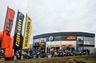

НОВОСТИ
 | 29 мая 2017 года 1090 ADVENTURE – ПЕРВЫЙ ИЗ БОЛЬШИХ ПУТЕШЕСТВЕННИКОВ Модель 1090 ADVENTURE презентовали минувшей осенью на выставке INTERMOT в Кёльне. Теперь эти мотоциклы доступны в дилерских центрах KTM в Украине, и мы приглашаем Вас познакомиться с ними ближе. | |
19 мая 2017 года РЕВОЛЮЦИЯ В МИРЕ ДВУХТАКТНЫХ МОТОЦИКЛОВ KTM презентует первые в мире двухтактные мотоциклы с впрыском топлива! | ||
16 мая 2017 года ОБЗОР НОВОГО KTM 390 DUKE KTM 390 DUKE заново вдыхает жизнь в ценности, которые делают эту модель столь популярной на протяжении десятилетий. Он обеспечивает владельцу максимальное удовольствие от езды, технологичность и современный дизайн. | ||
 | 5 мая 2017 года Новые модели KTM SX 2018 КТМ представляет новую линейку моделей SX 2018 года, которые уже с мая будут доступны во всех дилерских центрах КТМ в Украине. | |
21 апреля 2017 года Стефан Пирер назначен президентом европейской ассоциации мотопроизводителей Информация с встречи европейской ассоциации мотопроизводителей АСЕМ | ||
|  | 15 апреля 2016 года Региональный дилер в г.Львов – фоторепортаж с открытия Открытие нового дилера КТМ в Львовской, Закарпатской, Ивано-Франковской, Тернопольской и Волинской областях. | |
10 марта 2017 года МОТОБАЙК 2017 На нашем стенде! | ||
3 марта 2017 года KTM 1290 SUPER DUKE GT 2017 Наш первый обзор этой модели назывался «Внушающий восхищение». И как бы «пророчески» это не выглядело, но за прошедший год, мотоцикл таки вызвал восхищение и стал фаворитом многих авторитетных мировых мотоизданий. В чём же его секрет? | ||
13 февраля 2017 года KTM 390 DUKE 2017: Один на всех Может ли один мотоцикл быть одинаково хорош и для начинающего мотоциклиста, и для байкера со стажем? Может, если это Duke 390! | ||
 | 06 февраля 2017 года ОТКРЫТИЕ В МАРТЕ 2017 ГОДА! Региональный дилерский центр в Львовской, Закарпатской, Ивано-Франковской, Тернопольской и Волинской областях |